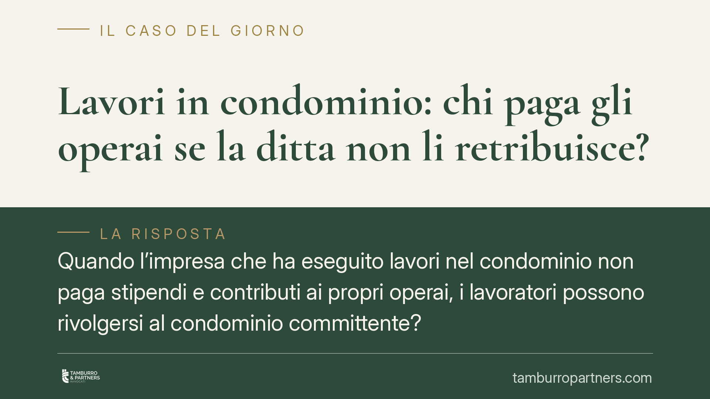

Lavori in condominio: chi paga gli operai se la ditta non li retribuisce?
Quando l'impresa che ha eseguito lavori nel condominio non paga stipendi e contributi ai propri operai, i lavoratori possono rivolgersi al condominio committente? La Cassazione tende a escludere la responsabilità solidale piena, lasciando però aperta l'azione diretta entro limiti precisi. Un tema rilevante per amministratori, imprese edili e lavoratori, non ancora del tutto stabilizzato in giurisprudenza.

Il problema
Un condominio affida lavori di ristrutturazione a un'impresa edile. L'impresa esegue l'opera ma non paga i propri operai, né versa i contributi previdenziali. I lavoratori possono aggredire direttamente il patrimonio del condominio? E in quale misura?
La questione ruota attorno a due norme che offrono tutele diverse: la responsabilità solidale negli appalti (art. 29 D.lgs. 276/2003) e l'azione diretta del lavoratore verso il committente (art. 1676 c.c.).
Inquadramento normativo
L'art. 29, comma 2, D.lgs. 276/2003 prevede che il committente imprenditore o datore di lavoro risponda in solido con l'appaltatore per i trattamenti retributivi e i contributi dovuti ai lavoratori impiegati nell'appalto. È una tutela forte: il lavoratore può chiedere l'intero al committente.
La stessa norma, però, esclude espressamente dal proprio campo di applicazione la persona fisica che non esercita attività d'impresa o professionale. Su questa base alcune recenti pronunce della Suprema Corte hanno ritenuto che anche il condominio, quando commissiona lavori senza finalità imprenditoriali, resti fuori dal perimetro della solidarietà ex art. 29.
Si tratta di un indirizzo in via di consolidamento, non di un principio pacifico: l'applicazione al condominio di un'esclusione testualmente riferita alla "persona fisica" è una lettura estensiva che la giurisprudenza non ha ancora stabilizzato in modo univoco. Va quindi maneggiata con cautela.
Diverso è il piano dell'art. 1676 c.c. Questa norma consente ai lavoratori dell'appaltatore di agire direttamente contro il committente, ma solo fino alla concorrenza del debito che il committente ha verso l'appaltatore nel momento in cui propongono la domanda. È una tutela più debole e condizionata.
Cosa cambia in concreto
La differenza tra le due vie è sostanziale.
Con la solidarietà ex art. 29, se applicabile, il committente risponde dell'intero, a prescindere da quanto abbia già pagato all'impresa. Con l'azione diretta ex art. 1676 c.c., invece, il lavoratore può ottenere solo quanto il condominio ancora deve alla ditta.
Esempio: se il condominio ha già saldato integralmente l'impresa prima che i lavoratori agiscano, il credito residuo verso l'appaltatore è pari a zero. In quel caso l'azione ex art. 1676 c.c. resta priva di capienza: non c'è nulla da aggredire. Da qui l'importanza del momento in cui la domanda viene proposta.
Resta ferma la tutela previdenziale parallela: per i contributi non versati i lavoratori possono rivolgersi all'INPS, che gestisce strumenti di garanzia (come il Fondo di garanzia) in caso di insolvenza del datore di lavoro. Le due strade non si escludono e vanno valutate congiuntamente.
Cosa fare in concreto
Per il condominio e l'amministratore:
- Richiedere e conservare il DURC (Documento Unico di Regolarità Contributiva) dell'impresa prima e durante l'esecuzione dei lavori.
- Inserire nel contratto d'appalto clausole che subordinino i pagamenti alla prova del regolare versamento di retribuzioni e contributi.
- Valutare il trattenimento di quote del corrispettivo fino alla verifica della regolarità contributiva dell'impresa.
- Documentare con precisione date e importi dei pagamenti alla ditta, perché da essi dipende l'eventuale credito residuo aggredibile.
Per i lavoratori:
- Verificare l'esistenza e l'entità del credito residuo del condominio verso l'impresa prima di agire ex art. 1676 c.c.
- Inviare una diffida tempestiva al committente, per "cristallizzare" il debito residuo prima che venga saldato.
- Attivare in parallelo le tutele previdenziali presso l'INPS per i contributi non versati.
- Non confidare automaticamente sulla capienza dell'azione verso il condominio: la posizione del committente condominiale risulta oggi più protetta e la sua solvibilità non va data per acquisita.
In sintesi
L'indirizzo della Cassazione tende a tenere il condominio committente fuori dalla responsabilità solidale piena dell'art. 29 D.lgs. 276/2003, assimilandone la posizione a quella del consumatore. Ai lavoratori resta l'azione diretta ex art. 1676 c.c., ma solo entro il limite del debito residuo verso l'impresa. Trattandosi di orientamento non ancora del tutto consolidato, ogni situazione va valutata caso per caso.
---
*Contributo informativo a cura di Tamburro & Partners Avvocati. Non costituisce parere legale.*
Ogni condominio ha una storia a sé.
Se gestisci un'amministrazione e vuoi un confronto su una specifica questione condominiale, scrivi allo studio. Ti rispondiamo entro un giorno lavorativo.